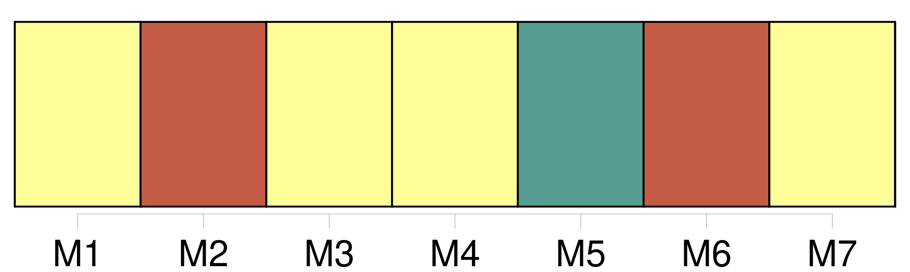

Longueur nb maillons : 15 mentions |
  |
Les actes d'opposition au mariage seront signés sur l'original et sur la copie par les opposans ou par leurs fondés de procuration spéciale et authentique ; ils seront signifiés, avec la copie, de la procuration à la personne ou [au domicile des parties] et à l'officier de l'état civil, qui mettra son visa sur l'original. [8 phrases]
Celui des époux qui serait dans l'impossibilité de se le procurer, pourra le suppléer en rapportant un acte de notoriété délivré par le juge de paix du lieu de sa naissance, ou par celui de [son domicile] [91 phrases]
[Du domicile] [3 phrases]
[Le domicile de tout Français] quant à l'exercice de ses droits civils, est au lieu où il a son principal établissement. [1 phrases]
Le changement de [domicile] s'opérera par le fait d'une habitation réelle dans un autre lieu, joint à l'intention d'y fixer son principal établissement. [1 phrases]
La preuve de l'intention résultera d'une déclaration expresse, faite tant à la municipalité du lieu que l'on quittera, qu'à celle du lieu où on aura transféré [son domicile] [12 phrases]
Le lieu où la succession s'ouvrira, sera déterminé par [le domicile] [1 phrases]
Lorsqu'un acte contiendra, de la part des parties ou de l'une d'elles, élection de [domicile] pour l'exécution de ce même acte dans un autre lieu que celui du domicile réel, les significations, demandes et poursuites relatives à cet acte, pourront être faites au domicile convenu, et devant le juge de [ce domicile] [17 phrases]
Pour constater, l'absence, le tribunal d'après les pièces et documens produits, ordonnera qu'une enquête soit faite contradictoirement avec le commissaire du Gouvernement, dans l'arrondissement [du domicile] , et dans celui de la résidence, s'ils sont distincts [l'un] de l'autre. [124 phrases]
Le mariage sera célébré publiquement, devant l'officier civil [du domicile de l'une des deux parties] [1 phrases]
Les deux publications ordonnées par l'article 63, au titre des Actes de l'état civil, seront faites à la municipalité du lieu où chacune des parties contractantes aura [son domicile] [9 phrases]
Dans les trois mois après le retour du Français sur le territoire de la République, l'acte de célébration du mariage contracté en pays étranger, sera transcrit sur le registre public des mariages du lieu de [son domicile] [13 phrases]
Tout acte d'opposition énoncera la qualité qui donne à l'opposant le droit de la former ; il contiendra élection de [domicile] dans le lieu où le mariage devra être célébré ; il devra également, à moins qu'il ne soit fait à la requête d'un ascendant, contenir les motifs de l'opposition : le tout à peine de nullité, et de l'interdiction de l'officier ministériel qui aurait signé l'acte contenant opposition. |
La ressource peut être téléchargée sur la page Ortolang
Si vous avez des questions ou vous voyez des erreurs, merci d'envoyer un mail à silvia.federzoni89@gmail.com
Site développé par S. Federzoni (contact)